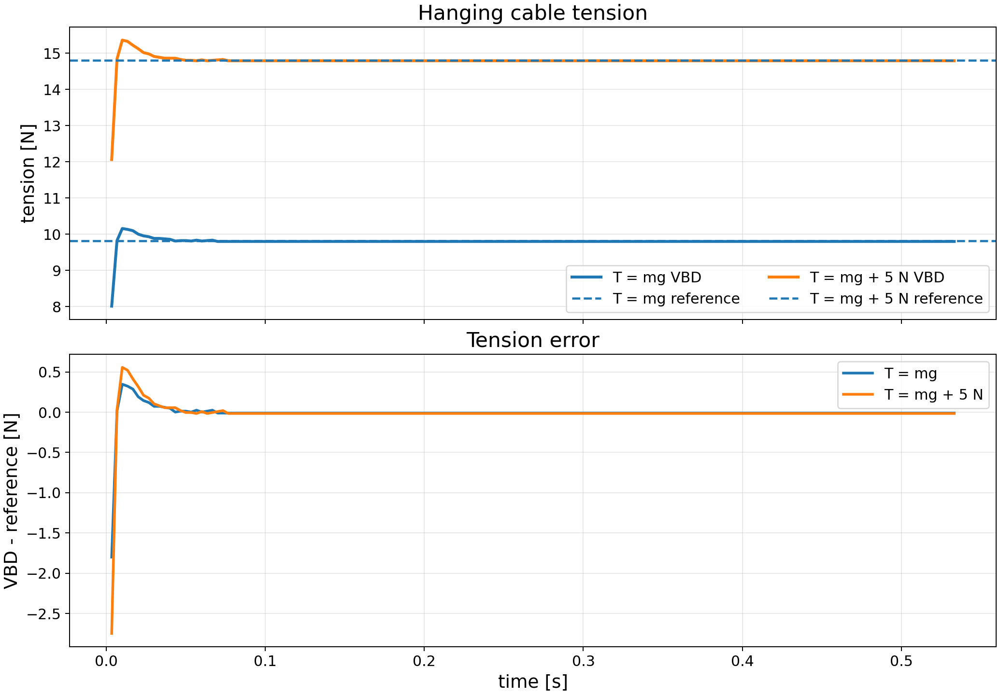
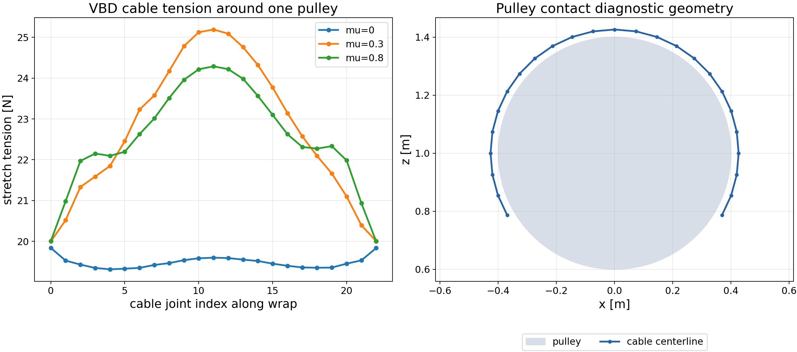
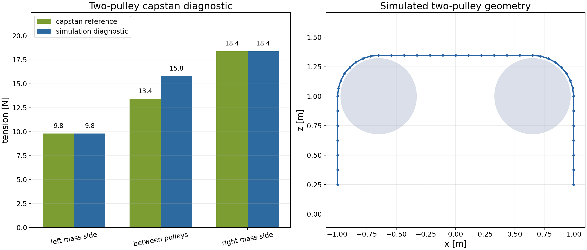
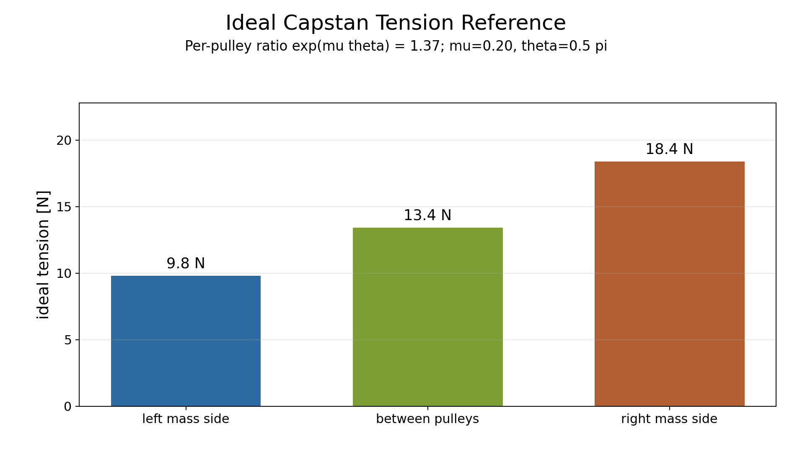

VBD validation report
VBD Cable Tension Readout
This report validates an opt-in VBD state output for cable tension. Users request it with
ModelBuilder.request_state_attributes("vbd:cable_tension"), and VBD fills
state.vbd.cable_tension with a joint-indexed stretch-tension magnitude in Newtons.
mu = 0.8
ke = 1.0e4 with zero bend stiffness
Synchronized viewer captures
Newton Rendered Videos
These videos pair a clean ViewerGL scene capture with fixed-scale diagnostic plots generated
from the same simulation frames, so the motion and tension traces stay synchronized without the viewer menu.
The x-axis is time in seconds. Tension and error plots are in N; the pulley ratio plot is dimensionless.
Pulley scenes render Newton's cable capsules directly, so the visible cable thickness follows the authored
cable radius instead of a hand-drawn overlay.
ke = 1.0e4, zero damping, and zero bend stiffness.
The two-pulley case has a longer transient than the hanging load case, so the video is useful for seeing the
middle-span tension evolve beyond the 1.5 s validation sample.
Analytic load balance
Equilibrium Load Cases
The first validation is a one kilogram body suspended from a world-anchored cable joint. At steady state,
the cable tension should balance the body weight. Adding a downward external force shifts the expected
value from T = mg to T = mg + F_applied.
T = mg, reference 9.810 N
T = mg + 5 N, reference 14.810 N
| Case | Reference [N] | Tail mean [N] | Absolute error [N] | Relative error |
|---|---|---|---|---|
T = mg |
9.810 | 9.799 | 0.011 | 0.112% |
T = mg + 5 N |
14.810 | 14.794 | 0.016 | 0.109% |

Per-segment tension field
VBD Pulley Diagnostic
The VBD-only diagnostic wraps a segmented cable around one fixed cylinder and applies equal 20 N endpoint
loads. Contact friction produces a segment-by-segment tension gradient that can now be inspected directly
through state.vbd.cable_tension[joint_ids].
This is not treated as an exact capstan proof: the simulated cable has finite-radius capsule segments, compliant stretch constraints, regularized frictional contact, and transient settling. The purpose here is to verify robust access to the tension field and to confirm that the readout exposes the expected qualitative trend.
| Contact friction | Min tension [N] | Max tension [N] | Measured max/min |
|---|---|---|---|
mu = 0.0 |
19.31 | 19.84 | 1.03 |
mu = 0.3 |
20.00 | 25.19 | 1.26 |
mu = 0.8 |
20.00 | 24.29 | 1.21 |

Frictional two-pulley path
Two-Pulley Capstan Diagnostic
The two-pulley case uses mass-equivalent endpoint loads and a quarter-wrap
(theta = pi / 2) over each fixed pulley. For an ideal massless cable, the capstan relation
gives T_high / T_low = exp(mu theta), predicting a middle-span tension between the left and
right mass-side loads.
The VBD scene is intentionally reported as a diagnostic rather than an exact capstan proof. The simulated
cable has finite-radius segments, stretch compliance, zero bend stiffness, and regularized frictional contact;
the side loads are prescribed endpoint loads, while the middle value is sampled directly from
state.vbd.cable_tension on the span between pulleys. At the 1.5 s validation sample, the
middle-span readout is 15.783 N against the ideal-string reference of 13.431 N.
| Location | Capstan reference [N] | Simulation diagnostic [N] | Source |
|---|---|---|---|
| Left mass side | 9.810 | 9.810 | endpoint load |
| Between pulleys | 13.431 | 15.783 | state.vbd.cable_tension |
| Right mass side | 18.388 | 18.388 | endpoint load |


mu = 0.20 and theta = pi / 2 per pulley.
Readout path
Implementation Notes
The solver computes the optional output after the VBD iterations and before finalizing velocities. It reuses
the accepted cable stretch constraint state and writes the stretch-force magnitude into a joint-frequency
extended state array. This keeps the API cheap when not requested and makes the output easy to align with
joint indices returned by add_joint_cable() or add_rod().
| Diagnostic | Solver iterations | Time step | Validation steps | Simulated time |
|---|---|---|---|---|
| Hanging load balance | 32 | 1 / 300 s | 160 | 0.53 s |
| Single-pulley tension field | 32 | 1 / 600 s | 600 | 1.00 s |
| Two-pulley capstan diagnostic | 32 | 1 / 600 s | 900 | 1.50 s |
The videos are four-second captures at 60 fps. They use the same solver-iteration counts and the same per-substep time steps as the validation runs above.